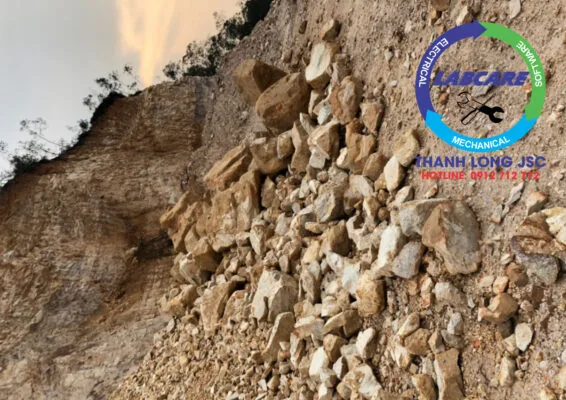
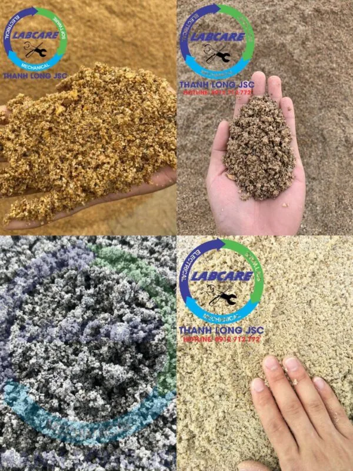
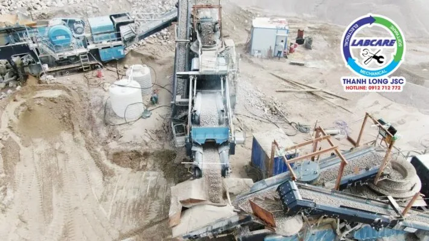

Mỏ đá sẽ gặp phải tình trạng khai thác theo kiểu địa tầng. Nguồn nguyên liệu cạn kiệt, khai thác ngày càng sâu. Việc đưa đá thô ngày càng xa với phễu cấp liệu của dây chuyền nghiền đá hoặc trạm nghiền cát nhân tạo. Tình trạng lâu dài sẽ gây thiệt hại lớn cho các cơ sở, xí nghiệp, doanh nghiệp lớn nhỏ. Máy nghiền cát di động là một giải pháp hiệu quả để khai thác đá sâu, khai thác ngắn hạn, khai thác nhiều đất hơn và ít trữ lượng hơn, v.v. ..
Máy nghiền cát di động là gì và có bao nhiêu loại ??
Máy nghiền cát di động là hệ thống máy nghiền cát giống như các loại trạm nghiền cát cố định bao gồm: Máy cấp liệu, sàng rung cấp liệu, máy kẹp hàm, máy nghiền côn, sàng rung phân loại, băng tải, máy nghiền cát, … Máy nghiền được các loại nguyên vật liệu thô có kích thước lớn. Thành các loại đá, cát có kích thước nhỏ hơn theo yêu cầu khách hàng.
Trạm nghiền cát di động có 2 loại: Máy nghiền cát di động Lokotrack (Bánh xích) và Máy nghiền cát di động Nord-Wheeler (Bánh lốp).
Theo báo cáo bán hàng mới nhất của Thanh Long JSC, vào đầu năm 2022 đã vượt chỉ tiêu doanh số bán hàng mỗi năm là 6 trạm nghiền cát di động.
Vì sao máy nghiền cát di động lại được ưa chuộng tại Việt Nam ?

Máy nghiền cát di động là công nghệ tiên tiến, được các kỹ sư chuyên gia từ Châu Âu – Mỹ thiết kế sản xuất khoáng sản. Nhằm mục đích giải quyết việc tái chế nhựa đường, tái chế chất thải xây dựng. Tái chế bê tông vụn và sản xuất cốt liệu quy mô nhỏ.
Nhờ có động cơ mạnh, kết cấu máy gọn nhẹ và chắc chắn. Thiết bị nghiền cát di động có thể di chuyển ở những địa hình không bằng phẳng, các mỏ đá khai thác ở tầng sâu. Nguyên liệu thô ở nhiều nơi khác nhau và theo dãy dài.
Được ứng dụng trong nhiều lĩnh vực khác nhau như:. Sản xuất vật liệu xây dựng, than đá, sản xuất gạch. Sản xuất đá cấp phối, sản xuất bê tông …
Khách hàng phù hợp với máy nghiền cát di động
- Máy nghiền cát di động là giải pháp đầu tư tiết kiệm với các công ty, doanh nghiệp vừa và nhỏ.
- Diện tích mặt bằng hoạt động nghiền hạn hẹp.
- Dự án nghiền cấp phối cho cao tốc hoặc các tuyến đường giao thông trải dài dọc tuyến của dự án.
- Vốn đầu tư giới hạn.
- Nguyên liệu nghiền thô kéo dài theo dãy, việc tập kết vật liệu gặp khó khăn như cao tốc thì sẽ vô cùng hợp lý.
Vì sao Tỉnh Ninh Thuận lại có nhiều máy nghiền cát di dộng do Thanh Long JSC lắp đặt

Địa hình Tỉnh Ninh Thuận từ Tây Bắc xuống Đông Nam thấp dần. Đây là vùng đất cuối của dãy Trường Sơn với nhiều dãy núi đâm ra biển. Tỉnh Ninh Thuận được bao bọc bởi 3 mặt là núi và 1 mặt là biển. Phía Tây là vùng núi cao giáp với Đà Lạt, phía Bắc và Nam có 2 dãy núi chạy ra biển. Giữa tỉnh và ven biển là vùng đồng bằng duyên hải nhỏ hẹp.
Khoáng sản ở Ninh Thuận tương đối phong phú về chủng loại: nguyên liệu sản xuất vật liệu xây dựng có cát kết vôi, đá granite, đá thạch anh, sỏi đồi, ngoài ra còn các khoáng sản kim loại.
Hiện nay lượng lớn chủ yếu khai thác đá, sỏi, cát, … Sản lượng khoáng sản làm nguyên liệu cho vật liệu xây dựng còn rất nhiều và tiềm năng. Cung cấp để sản xuất xi măng, làm gạch ngói, đá cát xây dựng, phụ gia xi măng, … Phục vụ 67 dự án lớn tại Tỉnh Ninh Thuận, trong giai đoạn 2021 – 2025.

Ưu điểm kỹ thuật máy nghiền cát di động
-
Linh hoạt và cơ động
Máy nghiền cát di động là loại xe tải có gầm xe cao, đường kính quay xe ngắn. Thích hợp với mọi địa hình, thậm chí có thể sử dụng được trên cả địa hình hiểm trở khó đi. Tiết kiệm thời gian di chuyển, đồng thời tăng thêm độ linh hoạt trong không gian sản xuất cho cả quá trình nghiền.
-
Giảm bớt được giá thành vận chuyển nguyên liệu
- Máy nghiền cát di động nghiền vật liệu tại ngay công trường.
- Tiết kiệm được khâu vận chuyển nguyên vật liệu ra khỏi nơi tập kết rồi mới tiến hành nghiền.
- Giảm được giá thành vận chuyển nguyên vật liệu
-
Tổ hợp linh hoạt, thích hợp mọi điều kiện
Căn cứ theo nhu cầu báo cáo doanh số bán hàng của Thanh Long JSC năm 2022 và nhu cầu khách hàng kèm theo. Trạm nghiền cát di động không chỉ có thể sử dụng trong việc vận hành “không người lái”. Mà còn có thể tổ hợp để nghiền thô, nghiền mịn 2 công đoạn phân hệ thống nghiền sàng. Hoặc 3 công đoạn nghiền thô, nghiền vừa và nghiền mịn, phân thành hệ thống nghiền sàng. Hoặc có thể căn cứ theo tình hình thực tế, mà tổ hợp thành hệ thống sàng. Sau đó nghiền hoặc hệ thống nghiền sau đó sàng.

-
Tính năng tin cậy, thuận tiện bảo dưỡng sửa chữa.
- Trạm nghiền cát di động áp dụng các tính năng ưu việt khác nhau của loại máy nghiền cát, sàng rung phân loại và máy cấp liệu.
- Chất lượng ổn định đáng tin cậy.
- Vận chuyển nguyên vật liệu có thể lắp đặt với băng tải.
- Kỹ thuật chuyên nghiệp.
- Vận hành đơn giản.
- Sửa chữa bảo dưỡng dễ dàng, vật tư thay thế có sẵn tại kho của Thanh Long.
- Giá thành đầu tư thấp.
-
Thiết kế máy theo nhu cầu khách hàng, chế độ bảo hành trên 24 tháng
Đáp ứng nhu cầu khách hàng về địa hình mỏ đá, công suất thành phẩm. Mặt bằng nguyên vật liệu, tính chất cơ lý đá, tiêu chuẩn thành phẩm. Sau khi ký hợp đồng, cũng như xuyên suốt thời gian dự án. THANH LONG JSC đảm bảo khách hàng sẽ được hỗ trợ trọn đời theo tuổi thọ của máy nghiền. Kiểm tra mẫu đá tại mỏ, sau đó mới tiến hành lắp đặt máy.
Đó là lý do chúng luôn giúp khách hàng tiết kiệm vật tư tiêu hao, tiết kiệm chi phí đầu tư. Các yếu tố hóa học chống ăn mòn như:. Mangan, crom, magie luôn pha trộn phù hợp với tính chất cơ lý của đá.
Liên hệ Zalo, hotline: 0912 712 772 báo giá nhanh nhất, cuộc gọi miễn phí
Thanh Long JSC Là thiết bị nghiền số 1 Việt Nam, đi đầu trong lĩnh vực công nghệ nghiền sàng đá. Các trạm nghiền do Thanh Long lắp đặt, được các chủ đầu tư lựa chọn và tin tưởng bởi:
- Tiết kiệm điện từ 4000đ/ 1 khối đá đầu ra.
- Vật tư tiêu hao bền hơn 2 lần so với các nhà sản xuất khác, luôn có sẵn tại kho.
- Hoạt động bền bỉ không dừng máy, chi phí sản xuất thấp
- Hệ thống báo hiệu cảnh báo áp suất, nhiệt độ, khe xả trên màn hiển thị.
- Hệ thống chống kẹt đá, phát hiện kim loại, chống quá tải được tích hợp.
- Đội ngũ kỹ sư tay nghề cao, nhiều kinh nghiệm. Được đào tạo theo tiêu chuẩn Châu Âu – Mỹ, sẵn sàng xử lý sự cố khi cần.
Thanh Long JSC chuyên cung cấp các sản phẩm dịch vụ về khai thác khoáng sản từ 100 tấn/h đến 2000 tấn/h:
- Dây chuyền nghiền cát/đá cố định: Máy kẹp hàm, máy nghiền côn, sàng rung phân loại, máy nghiền cát nhân tạo, …
- Dây chuyền nghiền cát/đá di động: máy kẹp hàm di động, máy nghiền côn di động, sàng rung phân loại di động, máy nghiền cát nhân tạo di động,..
- Công nghệ rửa/tách: Máy rửa cát theo module, sàng rung tách nước, máy tuyển rửa cát, máy tách cát mịn, máy thu hồi cát mịn…
- Vật tư, thiết bị phụ tùng: Dao nghiền, lưới sàng, má kẹp hàm, nón côn, …
Kênh video Youtube:
Page Facebook: Công Nghệ Máy Nghiền Đá
Website: https://thegioimaynghienda.com https://labcare.com.vn/
#bn